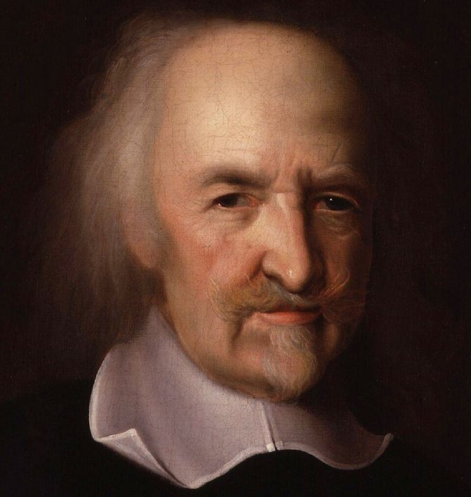
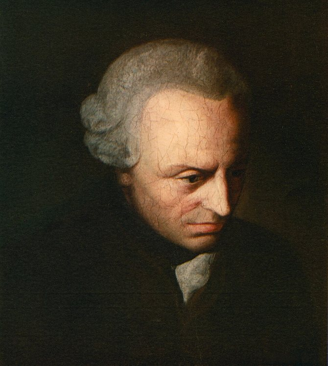

청소년 불법 온라인 도박을 출발점으로 본 국제 사법공조의 질문
개념적 가상 상황 / 피해지·서버 소재지·거래 기록 보관지가 서로 다를 때
Welcome To Video(2019) · 비트코인 추적 · 한국 내 서버 압수 · 수사 단서 38개국
국제 수사 단서가 38개국으로 전달되었습니다. 상세한 범죄 피해 장면은 다루지 않습니다.
공개 원장의 거래기록 → 사업자 보유 신원자료 → 합법적 요청 → 공동 수사
블록체인상 이동 내역
주소 ≠ 실명
고객확인·거래자료
국제공조·권한 심사
전자증거 공조 · 가상자산 자금세탁 방지 · 아직 발효되지 않은 다자협약
부다페스트 24/7 연락망 · 제2추가의정서
신속 협력 + 개인정보 보호사업자 감독 · 자금세탁 방지 · 트래블룰
수사기관의 무제한 열람권 아님전자증거 국제협력 틀을 지향
2026년 10월 당시 미발효홉스의 안전 · 칸트의 존엄 · 롤스의 공정한 기본적 자유

국가는 공동체를 보호할 책임을 지닌다.
윤리·정치철학
효율 때문에 누구의 권리도 함부로 희생하지 않는다.
생활과 윤리수사권도 정당한 절차라는 조건 안에서 행사된다.
통합사회·윤리포항고 1학년의 참여 동의 108건 · 조사 대상이 다르면 일반화할 수 없다
전자증거와 적법절차에 대한 문항별 긍정응답률 비교 · 인과관계가 아님
관할권 충돌 24.1% · 법률 차이 21.3% · 송환 19.4% : 학생의 선택
피해자 보호 30.6% · 절차적 정당성 21.3% · 수사 효율 16.7%
긴급 보존 · 요청의 적법성 심사 · 조건부 정보협력 · 독립적 권리 점검
요청 긴급성과 증거 보존
관할권 · 목적 · 범위 확인
가상자산 관련 자료의 합법적 요청
최소수집 · 기록 · 사후 통제
기술이 증거 확보를 돕더라도 권한과 인권에 대한 검토는 필요하다
총 12장 · 발표 420초(7분) / 질의응답 별도 3분
허준완 1~6장 200초 / 김주찬 7~12장 220초
브라우저에서 이 HTML을 열면 인터넷 없이 발표할 수 있습니다. 스페이스/→: 다음, ←: 이전, S: 발표자 창, Q: 질문, F: 전체화면, P: 타이머 멈춤, R: 초기화, ?: 도움말